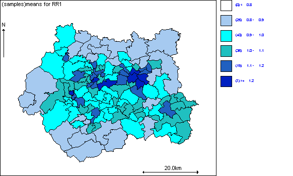
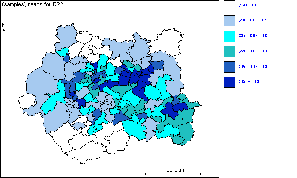

![[mvcar0]](mvcar0.bmp) Intrinsic multivariate CAR
Intrinsic multivariate CARprior for mapping multiple
diseases: Oral cavity cancer
and lung cancer in
West Yorkshire, UK
This example illustrates the use of the multivariate CAR prior distribution for joint mapping of two diseases. The data represent observed and age and sex standardised expected counts of incidenct cases of oral cavity and lung cancer in each of 126 electoral wards in the West Yorkshire region of England between 1986 and 1991. Some of the counts have been randomly peturbed by a small amount for confidentiality.
Since both outcomes are rare, the mortality counts Y ik for cancer k (k=1, 2) in area i (i=1,126) are assumed to follow independent Poisson distributions, conditional on an unknown mean m ik
Y ik ~ Poisson( m ik )
log m ik = log E ik + a k + S ik
where E ik is the age and sex standardised expected count for cancer k in area i, a k is an intercept term representing the baseline (log) relative risk of cancer k across the study region, and S ik is the area- and cancer-specific log relative risk of death. For cancer k, we assume that these log relative risks are spatially correlated across areas, and within area i, we assume that the log relative risks for cancer 1 (oral cavity) and cancer 2 (lung) are also correlated due to dependence on shared area-level unmeasured risk factors. We represent these correlation assumptions using an intrinsic bivariate CAR prior for the 2 x 126 dimensional matrix of S ik values. Technical details of this prior distribution are given in appendix 1 . The mv.car distribution may be used to fit this model. The OpenBUGS code is given below:
Model
model {
# Likelihood
for (i in 1 : Nareas) {
for (k in 1 : Ndiseases) {
Y[i, k] ~ dpois(mu[i, k])
# Note dimension of S is reversed:
log(mu[i, k]) <- log(E[i, k]) + alpha[k] + S[k, i]
# rows=k, cols=i because mv.car assumes rows represent variables
# (diseases) and columns represent observations (areas).
}
# The GeoBUGS map tool can only map vectors, so need to create separate vector
# of quantities to be mapped, rather than an array (i.e. RR[i,k] won't work!)
# area specific relative risk for disease 1 (oral)
RR1[i] <- exp(alpha[1] + S[1, i])
# area specific relative risk for disease 2 (lung)
RR2[i] <- exp(alpha[2] + S[2, i])
}
# MV CAR prior for the spatial random effects
# MVCAR prior
S[1:Ndiseases, 1 : Nareas] ~ mv.car(adj[], weights[], num[], omega[ , ])
for (i in 1:sumNumNeigh) {
weights[i] <- 1
}
# Other priors
for (k in 1 : Ndiseases) {
alpha[k] ~ dflat()
}
# Precision matrix of MVCAR
omega[1 : Ndiseases, 1 : Ndiseases] ~ dwish(R[ , ], Ndiseases)
# Covariance matrix of MVCAR
sigma2[1 : Ndiseases, 1 : Ndiseases] <- inverse(omega[ , ])
# conditional SD of S[1, ] (oral cancer)
sigma[1] <- sqrt(sigma2[1, 1])
# conditional SD of S[2,] (lung cancer)
sigma[2] <- sqrt(sigma2[2, 2])
# within-area conditional correlation
corr <- sigma2[1, 2] / (sigma[1] * sigma[2])
# between oral and lung cancers.
mean1 <- mean(S[1,])
mean2 <- mean(S[2,])
}
Data (click to open)
Inits for chain 1 Inits for chain 2 (click to open)
Results
mean sd MC_error val2.5pc median val97.5pc start sample
alpha[1] -0.008088 0.03675 3.728E-4 -0.08058 -0.00809 0.06387 1001 20000
alpha[2] -0.0228 0.008293 6.589E-5 -0.03894 -0.02275 -0.006552 1001 20000
corr 0.8428 0.1369 0.006778 0.4771 0.8828 0.9737 1001 20000
sigma[1] 0.2549 0.07805 0.004381 0.1093 0.2516 0.4209 1001 20000
sigma[2] 0.3662 0.03082 3.577E-4 0.3103 0.3646 0.4309 1001 20000
The posterior correlation between risk of oral cavity and lung cancers is 0.84 (95% CI: 0.48, 0.97) suggesting strong shared geographical pattern of risk between the two diseases.
A 1000 iteration burn-in followed by a further 10000 updates gave the following results


Multivariate convolution prior
Note that it is also possible to fit a multivariate equivalent of the BYM convolution model, by including an additional unstructured random effect for each area and disease, and assuming independent bivariate normal priors for each pair of unstructured effects within an area:
model {
# Likelihood
for (i in 1 : Nareas) {
for (k in 1 : Ndiseases) {
Y[i, k] ~ dpois(mu[i, k])
# Dimension of S reversed as before
log(mu[i, k]) <- log(E[i, k]) + alpha[k] + S[k, i] + U[i, k]
}
# area specific relative risk for disease 1 (oral)
RR1[i] <- exp(alpha[1] + S[1,i])
# area specific relative risk for disease 2 (lung)
RR2[i] <- exp(alpha[2] + S[2,i])
}
# MV CAR prior for the spatial random effects
# MVCAR prior
S[1 : Ndiseases, 1:Nareas] ~ mv.car(adj[], weights[], num[], omega[ , ])
for (i in 1 : sumNumNeigh) {
weights[i] <- 1
}
# Bivariate normal prior for unstructured random effects within each area
for (i in 1 : Nareas) {
# Unstructured multivariate normal
U[i, 1 : Ndiseases] ~ dmnorm(zero[], tau[ , ])
}
# Other priors
for (k in 1 : Ndiseases) {
alpha[k] ~ dflat()
}
# Precision matrix of MVCAR
omega[1:Ndiseases, 1:Ndiseases] ~ dwish(R[ , ], Ndiseases)
# Covariance matrix of MVCAR
sigma2[1 : Ndiseases, 1:Ndiseases] <- inverse(omega[ , ])
# conditional SD of S[1,] (oral cancer)
sigma[1] <- sqrt(sigma2[1, 1])
# conditional SD of S[2,] (lung cancer)
sigma[2] <- sqrt(sigma2[2, 2])
# within-area conditional correlation between spatial component of variation in oral
# and lung cancers.
corr <- sigma2[1, 2] / (sigma[1] * sigma[2])
# Precision matrix of MV Normal
tau[1:Ndiseases, 1:Ndiseases] ~ dwish(Q[ , ], Ndiseases)
# Covariance matrix of MV Normal
sigma2.U[1:2, 1:2] <- inverse(tau[ , ])
sigma.U[1] <- sqrt(sigma2.U[1, 1])
sigma.U[2] <- sqrt(sigma2.U[2, 2])
# within-area correlation between unstructured component of variation in oral and
# lung cancers
corr.U <- sigma2.U[1, 2] / (sigma.U[1] * sigma.U[2])
# within-area conditional correlation between total random effect
# (i.e. spatial + unstructured components) for oral cancer and for lung cancer
corr.sum <- (sigma2[1, 2] + sigma2.U[1, 2]) /
(sqrt(sigma2[1, 1] + sigma2.U[1, 1]) * sqrt(sigma2[2, 2] + sigma2.U[2, 2]))
mean1 <- mean(S[1,])
mean2 <- mean(S[2,])
}
Data click here to open data
Inits click here to open initial values
Results
A 10000 iteration burn-in followed by a further 50000 updates gave the following results
node mean sd MC error 2.5% median 97.5% start sample
alpha[1] -0.01151 0.03821 2.997E-4 -0.08717 -0.01135 0.06302 1001 50000
alpha[2] -0.02305 0.01207 1.121E-4 -0.04691 -0.02299 4.938E-4 1001 50000
corr 0.7705 0.3008 0.0165 -0.2615 0.8739 0.9806 1001 50000
corr.U 0.4254 0.4262 0.01909 -0.5998 0.5537 0.9213 1001 50000
corr.sum 0.7218 0.1964 0.009922 0.2064 0.7781 0.9413 1001 50000
sigma[1] 0.1916 0.07964 0.004244 0.0619 0.1862 0.3634 1001 50000
sigma[2] 0.2966 0.0467 0.001779 0.2023 0.2976 0.3863 1001 50000
sigma.U[1] 0.1079 0.04853 0.002281 0.04019 0.09911 0.2196 1001 50000
sigma.U[2] 0.09466 0.02739 0.001172 0.04393 0.09444 0.149 1001 50000
Again, the posterior correlation between the spatially structured risk components (S) for oral cavity and lung cancers is high (0.82; 95% CI: 0.29, 0.98), although correlation between the unstructured risk components (U) is less strong (0.38; 95% CI: -0.64, 0.92). Since the spatial component of risk dominates, the correlation between the total random effect (U + S) for oral cancer and lung cancer is also high (0.75; 95% CI: 0.36, 0.94), again suggesting strong shared geographical pattern of risk between the two diseases.